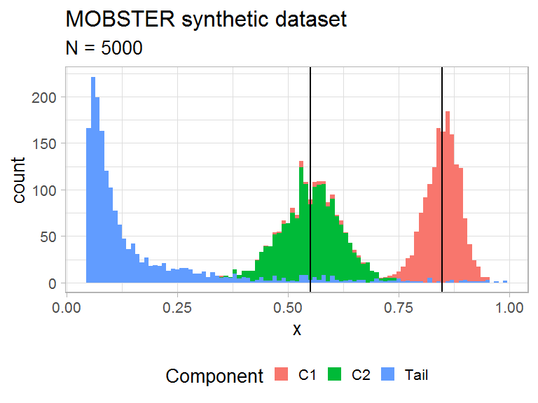
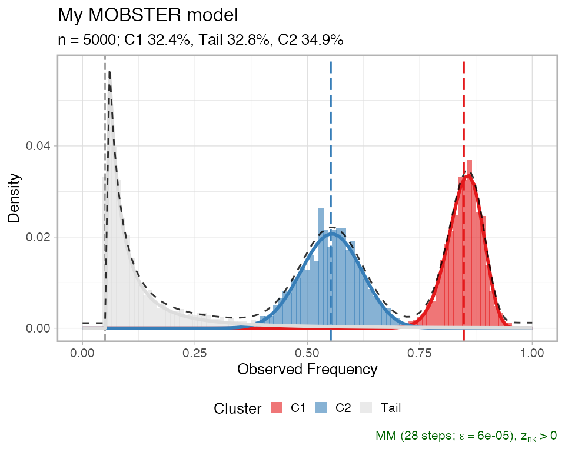
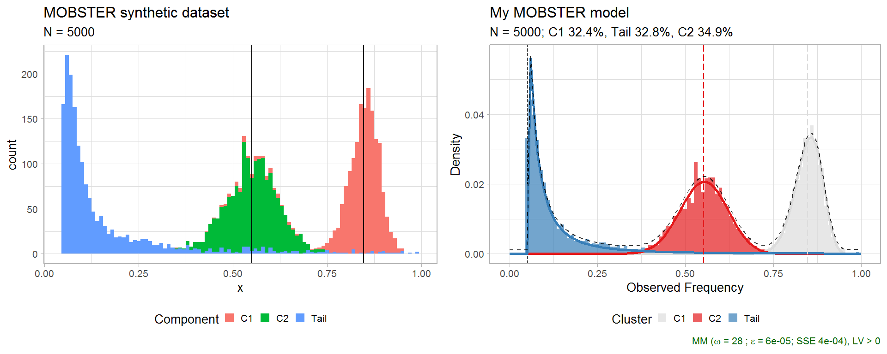

vignettes/a1_introduction.Rmd
a1_introduction.Rmdmobster
You can run a MOBSTER analysis if, for a set of input mutations (SNVs, indels etc.), you have available VAF or CCF data. The input data can be loaded using different input formats.
For VAF values you can use:
data.frame (or, tibble) with a column named VAF whose values are numerical \(0<x<1\), without NA entries and columns named any of those: cluster, Tail, C1, C2, C3,…;load_VCF and load the VCF content, and then proceed using your data as a data.frame.For CCF values you can only use the a data.frame format. Importantly, you have to store the CCF values in a column again named VAF, which must follow the same convention of a VAF column (i.e., range of values). Since CCF values usually peak at around 1.0 for clonal mutations (i.e., present in 100% of the input cells), we suggest to adjust standard CCF estimates dividing them by 0.5 in order to reflect the peak of an heterozygous clonal mutation at 50% VAF for a 100% pure bulk sample.
Example dataset. Diploid mutations from sample LU4 of the Comprehensive Omics Archive of Lung Adenocarcinoma are available in the package under the name LU4_lung_sample. The available object is the results of an analysis with mobster, and the input mutation data is stored inside the object.
# Example dataset LU4_lung_sample, downloaded from http://genome.kaist.ac.kr/ print(mobster::LU4_lung_sample$best$data) #> # A tibble: 1,282 x 12 #> Key Callers t_alt_count t_ref_count Variant_Classif… DP VAF chr #> <int> <chr> <int> <int> <chr> <int> <dbl> <chr> #> 1 370 mutect… 30 95 intergenic 125 0.24 chr2 #> 2 371 mutect… 10 105 intergenic 115 0.0870 chr2 #> 3 372 mutect… 40 108 intronic 148 0.270 chr2 #> 4 373 mutect… 20 101 intronic 121 0.165 chr2 #> 5 374 mutect… 39 89 intergenic 128 0.305 chr2 #> 6 375 mutect… 41 120 intronic 161 0.255 chr2 #> 7 376 mutect… 43 93 intronic 136 0.316 chr2 #> 8 377 mutect… 22 95 intergenic 117 0.188 chr2 #> 9 378 mutect 7 104 intergenic 111 0.0631 chr2 #> 10 379 mutect… 35 93 intergenic 128 0.273 chr2 #> # … with 1,272 more rows, and 4 more variables: from <chr>, ref <chr>, #> # alt <chr>, cluster <chr>
Other datasets are available through the data command.
In the context of subclonal deconvolution we are often interested in linking “driver” events to clonal expansions. Since mobster works with somatic mutations data, it is possible to annotate the status of “driver mutation” in the input data; doing so, the drivers will be reported in some visualisations of the tool, but will not influence any of the computation carried out in mobster.
The annotate one or more driver mutations you need to include in your column 2 extra columns:
is_driver, a boolean TRUE/FALSE flag;driver_label, a character string that will be used as label in any visualisation that uses drivers.You can sample a random dataset with the random_dataset function, setting:
n) and Beta components (k, subclones) to generate;The variance of the Betas is defined as \(u/B\) where \(u \sim U[0,1]\), and \(B\) is the input parameter Beta_variance_scaling. Roughly, values of Beta_variance_scaling on the order of 1000 give low variance and sharp peaked data distributions. Values on the order of 100 give much wider distributions.
dataset = random_dataset( seed = 123456789, Beta_variance_scaling = 100 # variance ~ U[0, 1]/Beta_variance_scaling )
A list with 3 components is returned, which contains the actual data, sampled parameters of the generative model, and a plot of the data.
In mobster we provide the implementation of the model’s density function (ddbpmm, density Dirichlet Beta Pareto mixture model), and a sampler (rdbpmm) which is used internally by random_dataset to generate the data.
# Data, in the MOBSTER input format with a "VAF" column. print(dataset$data) #> # A tibble: 5,000 x 2 #> VAF cluster #> <dbl> <chr> #> 1 0.856 C1 #> 2 0.853 C1 #> 3 0.844 C1 #> 4 0.827 C1 #> 5 0.855 C1 #> 6 0.854 C1 #> 7 0.878 C1 #> 8 0.865 C1 #> 9 0.845 C1 #> 10 0.874 C1 #> # … with 4,990 more rows # We rename the `cluster` column (that is a reserved name) dataset$data = dataset$data %>% dplyr::rename(gen_clusters = cluster) # The generated model contains the parameters of the Beta components (a and b), # the shape and scale of the tail, and the mixing proportion. print(dataset$model) #> $a #> C1 C2 #> 72.6286 30.5932 #> #> $b #> C1 C2 #> 13.07363 24.93900 #> #> $shape #> [1] 1 #> #> $scale #> [1] 0.05 #> #> $pi #> Tail C1 C2 #> 0.3431634 0.3331162 0.3237204 # A plot object (ggplot) is available where each data-point is coloured by # its generative mixture component. The vertical lines annontate the means of # the sampled Beta distributions. print(dataset$plot)

Function mobster_fit fits a MOBSTER model.
The function implements a model-selection routine that by default scores models by their reICL (reduced Integrative Classification Likelihood) score, a variant to the popular BIC that uses the entropy of the latent variables of the mixture. reICL is discussed in the main paper.
This function has several parameters to customize the fitting procedure, and a set of special pre-parametrised runs that can be activated with parameter auto_setup. Here we use auto_setup = "FAST", an automatic setup for a fast run; its parameters are accessible through an internal package function.
# Hidden function (:::) mobster:::template_parameters_fast_setup() #> $K #> [1] 1 2 #> #> $samples #> [1] 2 #> #> $init #> [1] "random" #> #> $tail #> [1] TRUE FALSE #> #> $epsilon #> [1] 1e-06 #> #> $maxIter #> [1] 100 #> #> $fit.type #> [1] "MM" #> #> $seed #> [1] 12345 #> #> $model.selection #> [1] "reICL" #> #> $trace #> [1] FALSE #> #> $parallel #> [1] FALSE #> #> $pi_cutoff #> [1] 0.02 #> #> $N_cutoff #> [1] 10
Compared to these, default parameters test more extensive types of fits (i.e., more clones, longer fits, higher number of replicates etc.). We usually use the fast parametrisation to obtain a first fit of the data and, if not satisfied, we run customised calls of mobster_fit.
# Fast run with auto_setup = "FAST" fit = mobster_fit( dataset$data, auto_setup = "FAST" ) #> [ MOBSTER fit ] #> ✔ Loaded input data, n = 5000. #> ❯ n = 5000. Mixture with k = 1,2 Beta(s). Pareto tail: TRUE and FALSE. Output clusters with π > 0.02 #> and n > 10. #> ! mobster automatic setup FAST for the analysis. #> ❯ Scoring (without parallel) 2 x 2 x 2 = 8 models by reICL. #> ℹ MOBSTER fits completed in 21.1s. #> ── [ MOBSTER ] My MOBSTER model n = 5000 with k = 2 Beta(s) and a tail ─────────────────────────────── #> ● Clusters: π = 35% [C2], 33% [Tail], and 32% [C1], with π > 0. #> ● Tail [n = 1567, 33%] with alpha = 1.3. #> ● Beta C1 [n = 1636, 32%] with mean = 0.85. #> ● Beta C2 [n = 1797, 35%] with mean = 0.55. #> ℹ Score(s): NLL = -2558.66; ICL = -4657.61 (-5009.64), H = 383.05 (31.02). Fit converged by MM in 28 #> steps.
A call of mobster_fit will return a list with 3 elements:
fit$best, according to the selected scoring method;fit$runs, a list with the ranked fits; best matches the head of this list;fit$fits.table, a table that summarises the scores for each one of the runs.Each fit object (best or any object stored in runs) is from the S3 class dbpmm.
# Print the best model print(fit$best) #> ── [ MOBSTER ] My MOBSTER model n = 5000 with k = 2 Beta(s) and a tail ─────────────────────────────── #> ● Clusters: π = 35% [C2], 33% [Tail], and 32% [C1], with π > 0. #> ● Tail [n = 1567, 33%] with alpha = 1.3. #> ● Beta C1 [n = 1636, 32%] with mean = 0.85. #> ● Beta C2 [n = 1797, 35%] with mean = 0.55. #> ℹ Score(s): NLL = -2558.66; ICL = -4657.61 (-5009.64), H = 383.05 (31.02). Fit converged by MM in 28 #> steps. # Print top-3 models print(fit$runs[[1]]) #> ── [ MOBSTER ] My MOBSTER model n = 5000 with k = 2 Beta(s) and a tail ─────────────────────────────── #> ● Clusters: π = 35% [C2], 33% [Tail], and 32% [C1], with π > 0. #> ● Tail [n = 1567, 33%] with alpha = 1.3. #> ● Beta C1 [n = 1636, 32%] with mean = 0.85. #> ● Beta C2 [n = 1797, 35%] with mean = 0.55. #> ℹ Score(s): NLL = -2558.66; ICL = -4657.61 (-5009.64), H = 383.05 (31.02). Fit converged by MM in 28 #> steps. print(fit$runs[[2]]) #> ── [ MOBSTER ] My MOBSTER model n = 5000 with k = 1 Beta(s) and a tail ─────────────────────────────── #> ● Clusters: π = 71% [C1] and 29% [Tail], with π > 0. #> ● Tail [n = 1429, 29%] with alpha = 1.5. #> ● Beta C1 [n = 3571, 71%] with mean = 0.68. #> ℹ Score(s): NLL = -1446.64; ICL = -2379.16 (-2842.18), H = 463.01 (0). Fit converged by MM in 22 #> steps. print(fit$runs[[3]]) #> ── [ MOBSTER ] My MOBSTER model n = 5000 with k = 1 Beta(s) and a tail ─────────────────────────────── #> ● Clusters: π = 71% [C1] and 29% [Tail], with π > 0. #> ● Tail [n = 1429, 29%] with alpha = 1.5. #> ● Beta C1 [n = 3571, 71%] with mean = 0.68. #> ℹ Score(s): NLL = -1446.64; ICL = -2379.17 (-2842.18), H = 463.01 (0). Fit converged by MM in 22 #> steps.
Usually, one keeps working with the best model fit. From that it is possible to extract the results of the fit, and the clustering assignments. The output is a copy of the input data, with a column reporting the model’s latent variables (LVs) and the cluster assignment (hard clustering).
# All assignments Clusters(fit$best) #> # A tibble: 5,000 x 6 #> VAF gen_clusters cluster Tail C1 C2 #> <dbl> <chr> <chr> <dbl> <dbl> <dbl> #> 1 0.856 C1 C1 0.00371 0.996 0.000000547 #> 2 0.853 C1 C1 0.00375 0.996 0.000000759 #> 3 0.844 C1 C1 0.00403 0.996 0.00000242 #> 4 0.827 C1 C1 0.00520 0.995 0.0000187 #> 5 0.855 C1 C1 0.00371 0.996 0.000000571 #> 6 0.854 C1 C1 0.00373 0.996 0.000000684 #> 7 0.878 C1 C1 0.00415 0.996 0.0000000246 #> 8 0.865 C1 C1 0.00370 0.996 0.000000171 #> 9 0.845 C1 C1 0.00398 0.996 0.00000208 #> 10 0.874 C1 C1 0.00392 0.996 0.0000000480 #> # … with 4,990 more rows # Assignments with LVs probability above 85% Clusters(fit$best, cutoff_assignment = 0.85) #> # A tibble: 5,000 x 6 #> VAF gen_clusters cluster Tail C1 C2 #> <dbl> <chr> <chr> <dbl> <dbl> <dbl> #> 1 0.856 C1 C1 0.00371 0.996 0.000000547 #> 2 0.853 C1 C1 0.00375 0.996 0.000000759 #> 3 0.844 C1 C1 0.00403 0.996 0.00000242 #> 4 0.827 C1 C1 0.00520 0.995 0.0000187 #> 5 0.855 C1 C1 0.00371 0.996 0.000000571 #> 6 0.854 C1 C1 0.00373 0.996 0.000000684 #> 7 0.878 C1 C1 0.00415 0.996 0.0000000246 #> 8 0.865 C1 C1 0.00370 0.996 0.000000171 #> 9 0.845 C1 C1 0.00398 0.996 0.00000208 #> 10 0.874 C1 C1 0.00392 0.996 0.0000000480 #> # … with 4,990 more rows
The second call imposes a cut to the assignments with less than 85% probability mass in the LVs.
If you want to assign some new data to the fit model you can use function Clusters_denovo.
Clusters can be plot as an histogram with the model density (total and per mixture). By default, mobster names Beta clusters C1, C2, etc. according to the decreasing order of their mean; so C1 is always the cluster with highest Beta mean, etc. If the data are diploid mutations, C1 should represent clonal mutations.
# Plot the best model plot(fit$best)

A comparative plot between the fit and data is assembled using cowplot.
